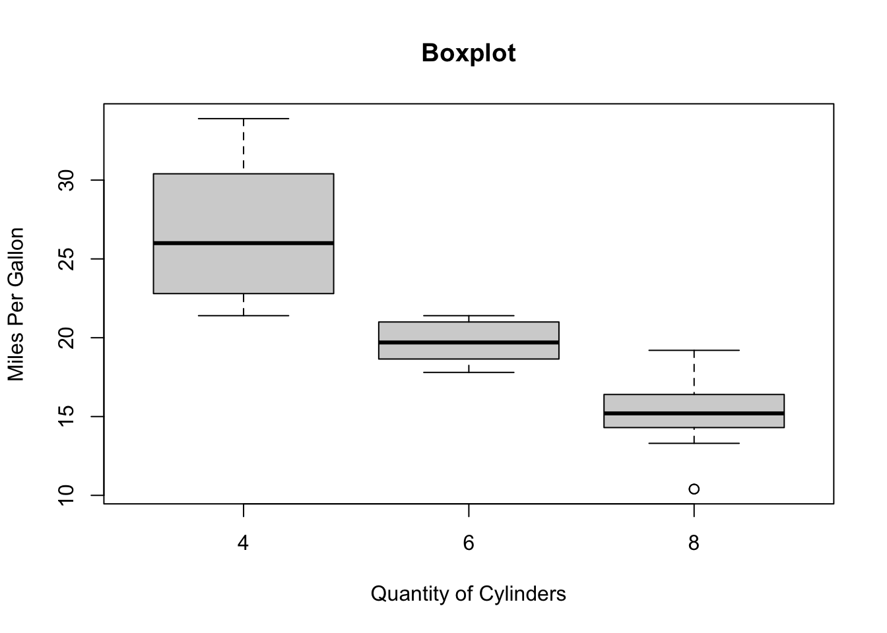
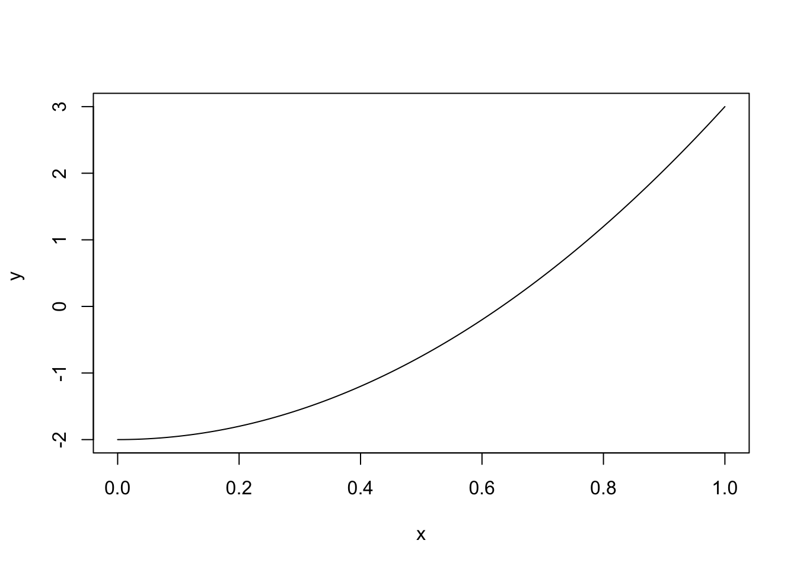
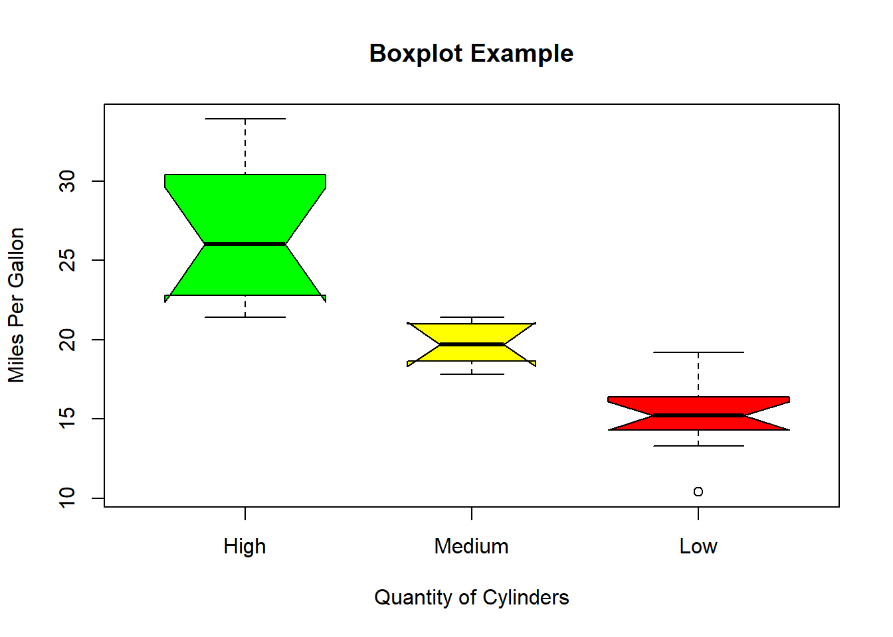

format(12.3456789, digits = 2)[1] "12"format(12.3456789, nsmall = 2)[1] "12.34568"format(1.5:5.5, trim = TRUE)[1] "1.5" "2.5" "3.5" "4.5" "5.5"formatTo format numbers or strings according to a specific format
format(12.3456789, digits = 2)[1] "12"format(12.3456789, nsmall = 2)[1] "12.34568"format(1.5:5.5, trim = TRUE)[1] "1.5" "2.5" "3.5" "4.5" "5.5"df <- data.frame(id=c(1.1, 2.22, 3.333), letter=c("aaa", "bb", "c"))
df id letter
1 1.100 aaa
2 2.220 bb
3 3.333 cformat(df, justify = "left") id letter
1 1.100 aaa
2 2.220 bb
3 3.333 c hexmodePrint integers in hexmode
values <- 10:100
as.hexmode(values) [1] "0a" "0b" "0c" "0d" "0e" "0f" "10" "11" "12" "13" "14" "15" "16" "17" "18"
[16] "19" "1a" "1b" "1c" "1d" "1e" "1f" "20" "21" "22" "23" "24" "25" "26" "27"
[31] "28" "29" "2a" "2b" "2c" "2d" "2e" "2f" "30" "31" "32" "33" "34" "35" "36"
[46] "37" "38" "39" "3a" "3b" "3c" "3d" "3e" "3f" "40" "41" "42" "43" "44" "45"
[61] "46" "47" "48" "49" "4a" "4b" "4c" "4d" "4e" "4f" "50" "51" "52" "53" "54"
[76] "55" "56" "57" "58" "59" "5a" "5b" "5c" "5d" "5e" "5f" "60" "61" "62" "63"
[91] "64"mat <- matrix(1:9, nrow =3)detCalucate the determinant of a square matrix
base::det(mat)[1] 0lower.tri/ upper.triCheck whether the elements belong to lower or upper triangle of a matrix
base::lower.tri(mat) [,1] [,2] [,3]
[1,] FALSE FALSE FALSE
[2,] TRUE FALSE FALSE
[3,] TRUE TRUE FALSEbase::upper.tri(mat) [,1] [,2] [,3]
[1,] FALSE TRUE TRUE
[2,] FALSE FALSE TRUE
[3,] FALSE FALSE FALSEapplyapply(mat, 2, mean)[1] 2 5 8apply(mat, 2, max)[1] 3 6 9apply(mat, 1, max)[1] 7 8 9x <- c(1, 1, 2, 3, 10, 1, 100)
rank(x)[1] 2 2 4 5 6 2 7boxplotboxplot(mpg ~ cyl, data = mtcars, xlab = "Quantity of Cylinders",
ylab = "Miles Per Gallon", main = "Boxplot")
boxplot(mpg ~ cyl, data = mtcars,
xlab = "Quantity of Cylinders",
ylab = "Miles Per Gallon",
main = "Boxplot Example",
notch = TRUE,
varwidth = TRUE,
col = c("green","yellow","red"),
names = c("High","Medium","Low")
) Warning in (function (z, notch = FALSE, width = NULL, varwidth = FALSE, : some
notches went outside hinges ('box'): maybe set notch=FALSE
curvecurve (5*x+4 , -2 , 2 , ylab='y')
curve (x^2 - 2 , add = TRUE , col = "red" , ylab = 'y ')curve (5*x^2 - 2, ylab = 'y ')
expr <- cos
curve(expr ,-2*pi, 2*pi, ylab='cos(x)', xlab='x')
stem(mtcars$mpg)
The decimal point is at the |
10 | 44
12 | 3
14 | 3702258
16 | 438
18 | 17227
20 | 00445
22 | 88
24 | 4
26 | 03
28 |
30 | 44
32 | 49samplex = a vector, from which to choose the sample
n = number of items to choose from
replace = should sampling be with replacement?
size = size of the sample
prob = vector of probability weights for obtaining the elements of the vector being sampled
data <- 1:10
sample(data) [1] 1 2 3 4 6 9 10 5 8 7sample(data, size = 5)[1] 4 5 8 10 3sample(data, size = 5, replace = TRUE)[1] 9 7 10 10 2sample(data, size = 5, replace = FALSE)[1] 1 8 4 10 3